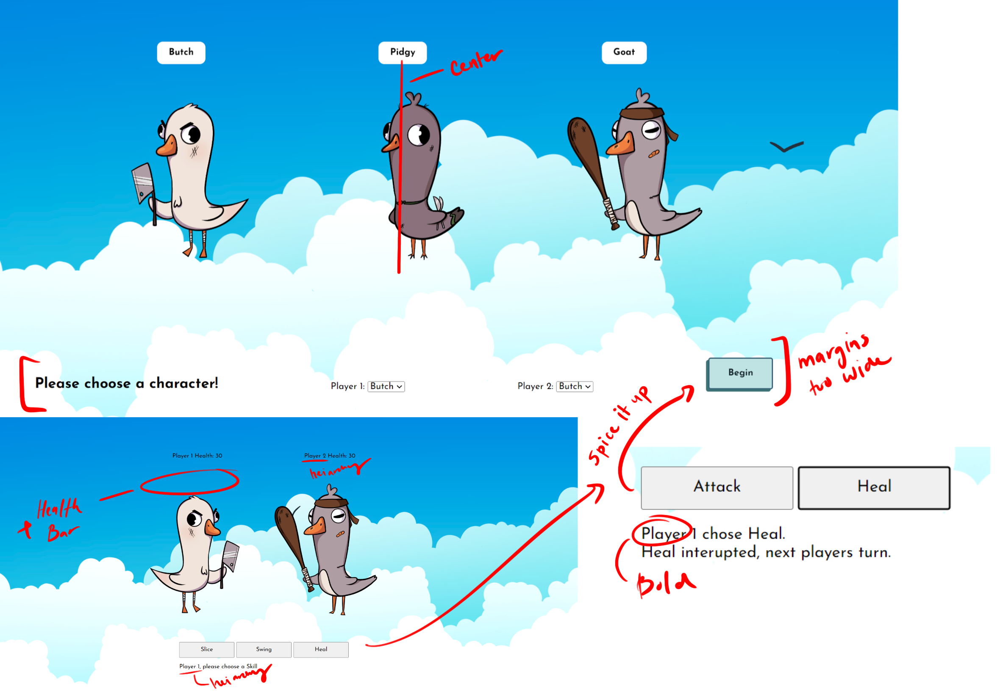
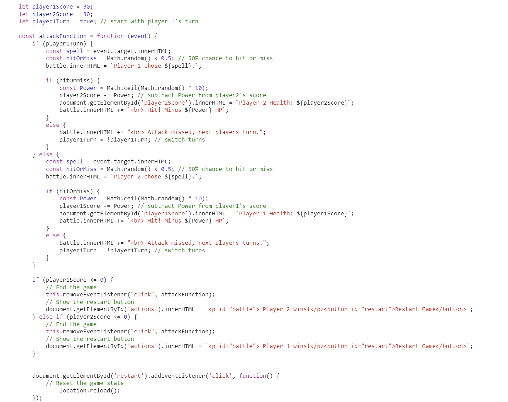

VISUAL DESIGN CRITIQUES & REPORT
Reviewed by: Laroche - DES 157 Teaching Assistant, Dongqi Mo - DES 116 Teaching Assistant
The main points that were made when dicussing the visual design of the game is adding some sort of animation and health indication when players play the game. It was also suggested to add more heiarchy to identify which playes turn it was. Another element that can be altered is adding some design to the attack and heal buttons as well but overall the designs and illustrations are impressive and have potential for futher iteration.
Notes
"The buttons should have a consistent visual style, similar to the options for player 1 and player 2. Consider using thicker borders to unify the button styles, allowing users to recognize and become familiar with them at first glance. Additionally, aligning all text at the same height—even if it floats—will give the design a cleaner, more cohesive look."
"The health values could benefit from brighter colors and bold fonts to make them stand out more prominently on the screen."
"Using thicker lines for the box will enhance its visual impact and maintain consistency with the style of all other option buttons."
"Try to minimize white space unless it's necessary for additional rules or elements."
CODE REVIEW & REPORT
Reviewed by: Jermaine Brown - Graduate at Rose Hulman Institute of Tech
For my code review, it was noted that there were 2 instances of code duplication that are minimal because of only 2-3 reuses such as the attack function, the if and else statements were repetitive code with minimal changes. This also goes to the healing function which was essentially the same but with slight changes to the functionality. We discussed creating player classes that could be made for more future flexibility. The overall the code is functional and clean with very good naming conventions and readability as it is but changes can be made to simplify and shorten the code.
Notes
"You have some code duplication, since its repeated so often you can make this into a function along these lines. It makes it easier to fix any errors on that assignment and allows for potential to add more characters. If you create another function that, for example, passes in a target and attacker you can make your code half as large."